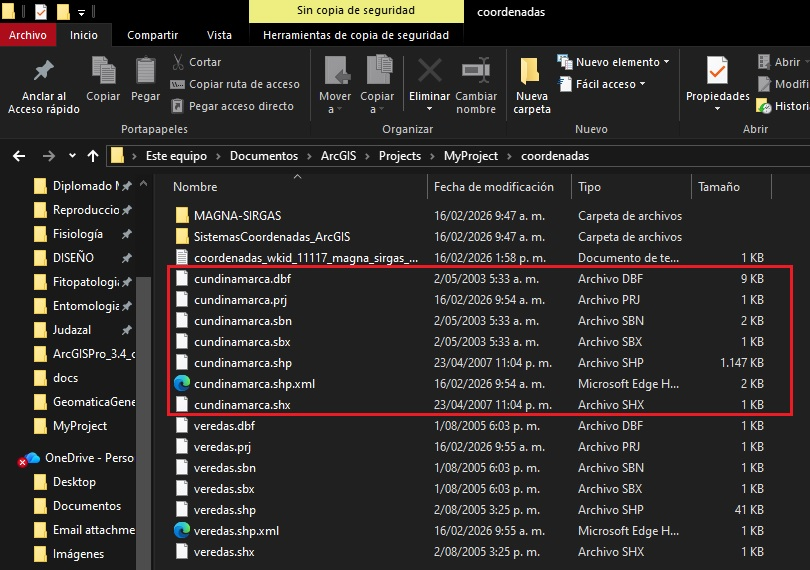
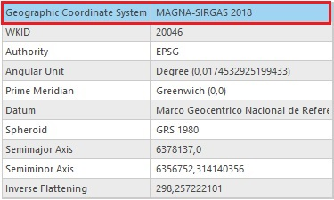

Taller #2 Coordenadas cartográficas
CUESTIONARIO ❓
1️⃣ ¿Qué otros archivos conforman ese Shapefile?.
Mediante el explorador de archivos de windows fue posible identificar 6 tipos de archivos diferentes (incluyendo el .prj) estos son: a. .dbf b. .sbx c. .shx d. .sbn e. .shp f. .prj
Archivos en el explorador.

2️⃣ ¿“Colombia Bogotá zone” tiene relación con ARENA o MAGNA-SIRGAS? ¿Es geográfico o proyectado?.
Sí, existe relación entre el Shapefile “veredas.shp” (con coordenadas de tipo “Colombia Bogotá zone”) y con los 2 sistemas de referencia geodésicos, específicamente con MAGNA-SIRGAS, además de esto, es geográfico (como se muestra en la imagen #2).
Información veredas.shp

3️⃣ ¿Cuales son los principales sistemas de coordenadas relacionados con Colombia?.
Tabla sistemas de coordenadas con código EPSG
| Sistemas de coordenadas | Tipo | Datum/Sistema geodésico | EPSG | Comentarios |
|---|---|---|---|---|
| MAGNA-SIRGAS 2018 | Geográfico | MAGNA-SIRGAS 2018 | 4686 | Sistema oficial moderno para Colombia, compatible GPS |
| Colombia Bogotá Zone | Proyectado | MAGNA-SIRGAS 2018 | 3116 | Proyección Transversal de Mercator, origen Bogotá |
| Colombia Medellín Zone | Proyectado | MAGNA-SIRGAS 2018 | 3117 | Proyección Transversal de Mercator, origen Medellín |
| Colombia Cali Zone | Proyectado | MAGNA-SIRGAS 2018 | 3118 | Proyección Transversal de Mercator, origen Cali |
| Colombia Bucaramanga Zone | Proyectado | MAGNA-SIRGAS 2018 | 3119 | Proyección Transversal de Mercator, origen Bucaramanga |
| Colombia Pereira Zone | Proyectado | MAGNA-SIRGAS 2018 | 3120 | Proyección Transversal de Mercator, origen Pereira |
| Colombia Cúcuta Zone | Proyectado | MAGNA-SIRGAS 2018 | 3121 | Proyección Transversal de Mercator, origen Cúcuta |
| ARENA | Geográfico | ARENA | 4284 | Sistema antiguo, usado antes de MAGNA, no recomendado actualmente |
4️⃣ “Geographic Transformation” ¿Es este el caso de esta transformación?. ¿Cómo es el proceso que ejecuta la herramienta?
A. Sí es nuestro caso puesto que no se requiere realizar ninguna transformación por la siguiente razón: - El archivo de entrada se le asignan unas coordenadas especificas: municipios.shp → sistema geográfico GCS_Bogota lo que nos genera un archivo de salida: municipios_planas → sistema proyectado Colombia Bogota Zone.prf; es importante mencionar que ambos sistemas utilizan el mismo datum (MAGNA-SIRGAS 2018 o el datum local de Bogotá) y cuando no cambias de datum, no hace falta aplicar ninguna transformación geográfica.
B. El proceso que ejecuta la herramienta sigue estos pasos:
Lee las coordenadas del archivo de entrada (municipios.shp) en latitud y longitud.
Aplica la proyección del sistema de salida (Colombia Bogota Zone.prf) donde convierte latitudes y longitudes a coordenadas planas (X,Y en metros).
Mantiene los atributos de cada entidad sin cambios (nombre, población, etc.).
Crea un nuevo feature class independiente (municipios_planas) dentro de la geodatabase que tiene la particularidad de ser un Stand alone; es decir que no depende de datasets anteriores.
Por ultimo, verifica que la geometría esté correcta en el nuevo sistema proyectado.